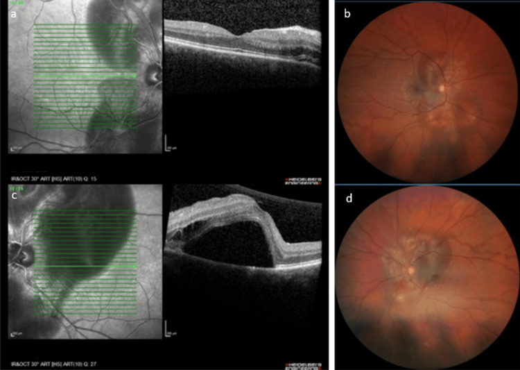
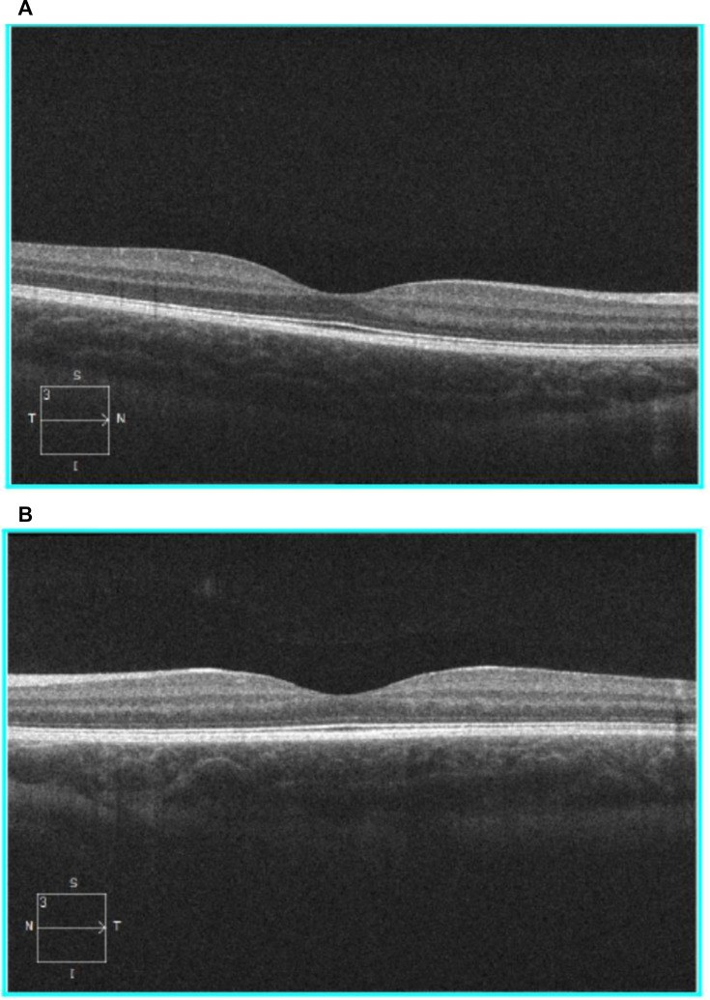

488 — Hydroxychloroquine trong THAI KỲ & cho con bú: an toàn mẹ–thai, lịch sàng lọc mắt và theo dõi thị giác trẻ phơi nhiễm / Hydroxychloroquine in pregnancy and lactation
Tags: pattern:ton-thuong-vong-mac-ngoai-do-thuoc vung:hoang-diem score:AAO-nguy-co protocol:SD-OCT-FAF-thi-truong-10-2
Mức chắc chắn (certainty): tổng hợp y văn (literature synthesis) — tự biên từ các bài mở CC BY 4.0/CC BY-NC (nghiên cứu PATCH, đoàn hệ GR2, phân tích gộp APS, ca PAH sau ngừng HCQ, review thay đổi mắt trong thai kỳ) + khuyến cáo EULAR/ACR (dẫn link); số liệu lấy nguyên từ bài gốc, tên tác giả đối chiếu PMCID.
Bài này trả lời 4 câu hỏi của bác sĩ CĐHA/mắt khi gặp thai phụ dùng HCQ: (1) có ngừng HCQ không? (2) sàng lọc võng mạc có đổi lịch không? (3) mờ mắt khi mang thai là do HCQ hay do thai kỳ? (4) theo dõi mắt cho con như thế nào? Đây là bài nối tiếp 484 – Nhiễm độc võng mạc do hydroxychloroquine (cơ chế, OCT/FAF/thị trường 10-2, ngưỡng liều) và 455 – Behçet & lupus tại mắt (tổn thương võng mạc do chính lupus). Không lặp lại kỹ thuật đọc ảnh của 484.
1. Tổng quan bệnh học – cơ chế hình ảnh
1.1 Vì sao phơi nhiễm thai ≤ 9 tháng gần như không gây độc võng mạc — dù HCQ rất độc với võng mạc người lớn
- HCQ gây độc võng mạc theo TÍCH LŨY nhiều năm, không theo liều cấp: tổn thương cần nhiều năm phơi nhiễm liên tục (nguy cơ < 1% trong 5 năm đầu, < 2% tới 10 năm, tăng tới ~20% sau 20 năm). Phơi nhiễm thai nhi tối đa ~9 tháng, tức ngắn hơn ngưỡng tích lũy hàng chục lần → xác suất độc võng mạc cho trẻ là rất thấp về mặt sinh học.
- Nhưng không thể "soi mắt trẻ sơ sinh để loại trừ": võng mạc trẻ chưa có hình thái người lớn ở giai đoạn sớm, và điện sinh lý (ERG) ở nhũ nhi không đáng tin (chỉ phát hiện tổn thương rất nặng). Muốn đánh giá đúng phải đợi khoảng 5 tuổi — lúc võng mạc đã đạt hình thái người lớn — rồi chụp SD-OCT tìm các dấu hiệu sớm (mất EZ cạnh hoàng điểm).
- Bằng chứng trực tiếp (nghiên cứu PATCH): 10 trẻ phơi nhiễm HCQ 400 mg/ngày trong tử cung được chụp OCT lúc 5 tuổi: không có mỏng lớp hạch, lớp tế bào cảm quang, ellipsoid zone hay RPE (kể cả vùng cạnh hoàng điểm và vùng quanh trung tâm — nơi người lớn châu Á hay bị). Độ dày võng mạc toàn bộ 288,92 ± 13,77 µm ở nhóm phơi nhiễm so với 297,70 ± 10,53 µm ở nhóm chứng (p = 0,18); cả hai đều nằm trong dữ liệu chuẩn 279 µm (95% CI 260–298). Nồng độ trong máu cuống rốn xác nhận trẻ thực sự đã phơi nhiễm.
- Tại sao lợi ích lại lớn hơn nguy cơ: HCQ giảm bùng phát lupus, giảm tổn thương cơ quan, giảm tái phát lupus sơ sinh (neonatal lupus). Ngừng HCQ không phải "an toàn cho con" mà là đánh đổi bằng bùng phát của mẹ — ca gốc: thai phụ tự ngừng HCQ ở tuần 8, đến tuần 27+4 nhập viện với tăng áp lực động mạch phổi (PAH) do bùng phát lupus; dùng lại HCQ 200 mg × 2/ngày + corticoid → hồi phục, áp lực động mạch phổi tâm thu ước tính còn 40 mmHg và hết triệu chứng ở 3 tháng sau sinh.
1.2 Ngưỡng định lượng nằm lòng (bắt buộc nhớ)
- Duy trì HCQ suốt thai kỳ và khi cho con bú: EULAR 2024 xếp thuốc chống sốt rét (antimalarials) vào nhóm "tương thích với thai kỳ" và "tương thích với cho con bú"; ACR 2020 và EULAR 2016 cũng khuyến cáo tiếp tục HCQ ở bệnh lupus. Liều đích ≤ 5 mg/kg cân nặng thực/ngày.
- Nồng độ HCQ toàn phần trong máu GIẢM trong thai kỳ (đoàn hệ GR2, 174 thai phụ SLE): 17,2% bùng phát (2,3% nặng), biến cố thai bất lợi 16,1%. Nồng độ 3 tháng đầu ≤ 500 ng/mL → bùng phát NẶNG 8,8% vs 0,7% (p = 0,02); ≤ 200 ng/mL → 13,3% vs 1,3% (p = 0,04). Nồng độ không liên quan biến cố thai bất lợi. Ngưỡng đích đã công bố: 1.000 / 750 / 500 ng/mL; ≤ 200 ng/mL = không tuân thủ nghiêm trọng. Lưu ý: máu toàn phần ≈ 2× huyết thanh — đừng so sai loại mẫu.
- An toàn dị tật bẩm sinh: đoàn hệ Mỹ nêu 35,3/1.000 (không dùng HCQ) so với 44,1/1.000 (dùng HCQ 3 tháng đầu), chỉ tăng có ý nghĩa khi liều > 400 mg/ngày — nhưng khuyến cáo EMA này bị phản biện toàn cầu, và đa số bằng chứng (300–1.000 thai kỳ + phân tích gộp) không cho thấy tăng dị tật.
- Phân tích gộp ở hội chứng kháng phospholipid (APS, 7 nghiên cứu, 750 bệnh nhân): HCQ tăng tỷ lệ sinh sống (OR 2,66; 95% CI 1,44–4,91) và giảm biến cố sản khoa (OR 0,19; CI in trong bài 0,19–0,39 — khoảng tin cậy này bất thường, cần đọc bản gốc); tỷ lệ sinh sống gộp 89,9% vs 73,9%, biến cố sản khoa gộp 19,3% vs 55,0%.
2. Mẫu hình + chẩn đoán phân biệt theo bối cảnh (gamut)
Câu hỏi lọc: "Triệu chứng mắt xuất hiện ở giai đoạn nào của thai kỳ, kèm huyết áp–protein niệu–đau đầu gì, và tổn thương đối xứng hai bên theo tầng nào?" — bối cảnh sản khoa quyết định chẩn đoán trước cả bối cảnh thuốc.
- Mờ nhìn + tăng huyết áp ± protein niệu ở tam cá nguyệt 2–3 → tiền sản giật: bong thanh dịch hai bên (thường quanh đĩa thị/hố trung tâm), đốm Elschnig (tổn thương hắc mạc do thiếu tưới máu), hẹp tiểu động mạch võng mạc, xuất tiết bông; nặng hơn → PRES (mù vỏ não), phù đĩa thị. Xử trí = kiểm soát huyết áp + sinh con, không phải ngừng HCQ.
- Mờ nhìn từng đợt, bong vòm hoàng điểm, không tăng huyết áp → CSCR: thai kỳ là trạng thái stress/nội tiết thuận lợi cho CSCR; khác HCQ (HCQ không gây dịch dưới võng mạc).
- Mất thị trường vòng cung quanh trung tâm, thị lực còn tốt, đã dùng HCQ > 5 năm → HCQ retinopathy (bài 484): mất EZ cạnh hoàng điểm đối xứng, FAF "mắt bò", thị trường 10-2. Thai kỳ không làm nhanh hơn — nhưng không miễn trừ cho người đã dùng nhiều năm.
- Đau đầu + ù tai + phù đĩa thị hai bên → tăng áp lực nội sọ vô căn (IIH): thai kỳ tăng cân làm nặng IIH; không phải HCQ.
- Mất thị lực một bên, đột ngột, có/không đau → tắc mạch võng mạc hoặc huyết khối xoang tĩnh mạch não: thai kỳ tăng đông (yếu tố I, V, VII, IX, X tăng; protein S/C và antithrombin III giảm) — cấp cứu, không chờ sàng lọc HCQ.
- Đường huyết kiểm soát kém + xuất huyết/vi mạch → bệnh võng mạc đái tháo đường tiến triển do thai: thai kỳ làm nặng ĐTĐ võng mạc, thường thoái lui sau sinh.
Mnemonic: "Thai kỳ + mờ mắt = nghĩ SẢN KHOA trước, nghĩ THUỐC sau" — Preeclampsia/PRES, CSCR, IIH, Thrombosis, Diabetes, rồi mới HCQ.
3. Bảng so sánh phân biệt (ma trận đối chiếu)
3.1 Mờ mắt ở thai phụ đang dùng HCQ — 5 bệnh cảnh phải tách
| Bệnh cảnh | Hình ảnh điển hình (OCT/FAF/đáy mắt) | Chốt vào (rule-in) | Chốt loại (rule-out) | Xử trí |
|---|---|---|---|---|
| Tiền sản giật / sản giật | Bong thanh dịch hai bên, đốm Elschnig, hẹp tiểu động mạch, xuất tiết bông; PRES nếu mù vỏ não | HA cao ± protein niệu ở tam cá nguyệt 2–3 + tổn thương hắc mạc–võng mạc hai bên | HA bình thường, tổn thương chỉ ở lớp võng mạc ngoài cạnh hoàng điểm → không phải tiền sản giật | Kiểm soát HA + sinh con; tiếp tục HCQ; theo dõi hậu sản (thường thoái lui) |
| CSCR (thai kỳ/stress/corticoid) | Bong vòm hoàng điểm một–hai bên, nâng RPE, FA có điểm rò, hắc mạc dày | Không tăng huyết áp + bong vòm + điểm rò trên FA/ICGA | Mất EZ cạnh hoàng điểm không dịch → không phải CSCR | Theo dõi; giảm stress/corticoid nếu được; không ngừng HCQ |
| HCQ retinopathy (thật) | Mất EZ cạnh hoàng điểm đối xứng, hố trung tâm bảo tồn ("flying saucer"), FAF "mắt bò", cung ám điểm 10-2 | Đã dùng HCQ > 5 năm hoặc liều > 5 mg/kg + đủ 2/3 dấu hiệu | Không mất EZ, có dịch/xuất huyết → nghĩ bệnh khác | Ngừng HCQ khi chắc chắn (phối hợp khớp/lupus); chụp lại 6–12 tháng |
| IIH | Phù đĩa thị hai bên, mất thị trường vành, MRI/MRV bình thường (không huyết khối) | Đau đầu + ù tai + phù đĩa thị hai bên + áp lực mở cao | Đĩa thị bình thường, mất thị trường cạnh trung tâm → nghĩ HCQ | Điều trị IIH (giảm cân, acetazolamide — thận trọng thai kỳ) |
| Tắc mạch võng mạc / huyết khối xoang | Phù võng mạc, xuất huyết tán mạch, cherry-red spot; phù đĩa thị + huyết khối trên MRV | Mất thị lực một bên đột ngột + bối cảnh tăng đông | Song phương, từ từ, không xuất huyết → không phải tắc mạch | Cấp cứu (chống đông theo phác đồ sản khoa) |
3.2 Lịch sàng lọc mắt quanh thai kỳ (giữ nguyên ngưỡng của AAO 2016 — bài 484)
| Thời điểm | Việc làm | Vì sao |
|---|---|---|
| Trước mang thai / khi bắt đầu HCQ | Khám nền tảng trong 1 năm đầu, gồm SD-OCT macula + FAF + thị trường 10-2 | Có ảnh so sánh; phát hiện bệnh võng mạc có sẵn (không phải độc tính) |
| Trong thai kỳ | Không rút ngắn lịch nếu không triệu chứng (vẫn hằng năm từ năm thứ 5, sớm hơn nếu có yếu tố nguy cơ); khám ngay khi có triệu chứng mắt | Thai kỳ không tăng tốc độc tính; ưu tiên loại trừ tiền sản giật |
| Nghi ngờ trên ảnh | Lặp SD-OCT + FAF + 10-2 sau 3–6 tháng; FAF/OCT góc rộng nếu bệnh nhân châu Á | Tránh ngừng thuốc oan vì dương tính giả/tilt |
| Cho con bú | Tiếp tục HCQ (EULAR 2024: tương thích) | Không cần "vắt bỏ sữa"; ngừng thuốc làm mẹ bùng phát |
| Trẻ phơi nhiễm trong tử cung | Không sàng lọc mắt thường quy ở nhũ nhi; nếu cần đánh giá, chụp SD-OCT quanh 5 tuổi | Võng mạc đạt hình thái người lớn ~5 tuổi; ERG nhũ nhi không đáng tin |
4. Protocol + sơ đồ quyết định
4.1 Bộ ba bắt buộc mỗi lần sàng lọc (không đổi so với bài 484)
- SD-OCT macula (đọc từng B-scan qua hố trung tâm, không chỉ bản đồ dày) + FAF + thị trường tự động 10-2.
- Thêm FAF/OCT góc rộng khi bệnh nhân châu Á hoặc OCT 30° không giải thích được triệu chứng (kiểu quanh trung tâm ≥ 8° có thể nằm ngoài khung).
4.2 Quản lý thuốc quanh thai (điểm khác biệt của bài này)
- Duy trì HCQ ở bệnh lupus/APS xuyên thai kỳ và cho con bú; liều ≤ 5 mg/kg/ngày.
- Cân nhắc đo nồng độ HCQ toàn phần trong máu khi bùng phát/không đáp ứng: ngưỡng ≤ 500 ng/mL gắn với bùng phát nặng; ≤ 200 ng/mL = không tuân thủ. Đây là công cụ phân biệt "bệnh nặng" với "không uống thuốc" — và là điểm kiểm soát tuân thủ (không phải ngưỡng độc tính).
- Ngừng HCQ chỉ khi có HCQ retinopathy chắc chắn theo 484 — và không vì lý do "đang mang thai".
4.3 Sơ đồ quyết định
flowchart TD
A[Thai phu dung HCQ - co trieu chung mat] --> B[Kiem tra HA + protein nieu + kham san khoa]
B --> C{Co tang huyet ap hoac protein nieu?}
C -->|Co| D[Tien san giat - kiem soat HA, sinh con, TIEP TUC HCQ]
C -->|Khong| E[SD-OCT macula + FAF + thi truong 10-2]
E --> F{Mat EZ canh hoang diem doi xung?}
F -->|Co| G{Da dung HCQ > 5 nam hoac lieu > 5 mg/kg?}
G -->|Co| H[HCQ retinopathy chac chan - ngung HCQ, phoi hop khop lupus]
G -->|Khong| I[Chup lai 3-6 thang, loai tru CSCR/IIH/tac mach]
F -->|Khong| J{Co dich duoi vong mac hoac nang RPE?}
J -->|Co| K[CSCR hoac VKH - theo doi, khong ngung HCQ]
J -->|Khong| L[Nghi IIH hoac tac mach - MRI MRV va kham than kinh]
A --> M[Sau sinh va cho con bu]
M --> N[Tiep tuc HCQ - EULAR 2024 tuong thich voi cho con bu]
N --> O[Khong sang loc mat thuong quy cho tre nho]
O --> P[Neu can - SD-OCT quanh 5 tuoi khi vong mac dat hinh thai nguoi lon]
5. Biến thể bình thường và cạm bẫy
- "Mang thai thì ngừng HCQ cho an toàn" — sai và nguy hiểm: ngừng HCQ làm bùng phát lupus, tăng lupus sơ sinh, và đã có ca PAH nặng ở tuần 27 sau khi tự ngừng ở tuần 8 (hồi phục khi dùng lại). EULAR 2024/ACR 2020: tiếp tục HCQ.
- Quy kết mọi mờ mắt thai kỳ cho HCQ: nguyên nhân hay gặp và cấp cứu là tiền sản giật/PRES — bỏ sót vì "đã có HCQ giải thích rồi" là lỗi chết người.
- Nhầm sinh lý thai kỳ với bệnh lý: thay đổi khúc xạ/giác mạc và khô mắt trong thai kỳ thường thoáng qua, hồi phục sau sinh — không phải độc võng mạc và không cần ngừng thuốc.
- Nồng độ HCQ thấp ≠ độc tính: ngược lại, nồng độ thấp nghĩa là thiếu thuốc/nguy cơ bùng phát — đọc đúng chiều.
- So sai loại mẫu: máu toàn phần ≈ 2× huyết thanh; ngưỡng 500 ng/mL là cho máu toàn phần.
- Không chờ "mắt bò" mới ngừng thuốc: "mắt bò" là dấu hiệu muộn; ngưỡng ngừng là mất EZ cạnh hoàng điểm đối xứng + FAF/thị trường tương ứng (bài 484).
- Dữ liệu dị tật bẩm sinh phải đọc đúng: con số 44,1/1.000 của đoàn hệ Mỹ chỉ tăng có ý nghĩa khi liều > 400 mg/ngày, và đã bị phản biện; đa số bằng chứng không tăng dị tật. Đừng dùng một dòng để khuyên ngừng thuốc.
- Cho con bú: HCQ tương thích (EULAR 2024) — không khuyên "vắt bỏ sữa" hay ngừng thuốc.
- Trẻ phơi nhiễm: không sàng lọc mắt thường quy ở nhũ nhi (không đánh giá được, dễ dương tính/âm tính giả); nếu cần, OCT quanh 5 tuổi.
6. Tự lượng giá — Blind Quiz
Ca 1 — Thai phụ 27 tuổi, con so, 32 tuần, nhập viện vì protein niệu 3+ và phù; huyết áp cao nhất 138/94 mmHg. Đang nằm viện thì giảm thị lực mắt trái (BCVA 20/20 mắt phải, 20/32 mắt trái). OCT hai mắt dưới đây.

- Hỏi: (1) Dịch nằm ở đâu và có đối xứng không? (2) Chẩn đoán ưu tiên là gì? (3) Nếu bệnh nhân này đang dùng HCQ, có nên ngừng không?
Bấm để hiện đáp án (findings + chẩn đoán)
- Findings: (1a) OCT mắt phải — lớp dịch mỏng vùng liên gai thị–hoàng điểm, CHƯA vào hố trung tâm; (1b) ảnh đáy mắt — bong thanh dịch quanh đĩa thị (peripapillary SRD); (1c,1d) mắt trái — bong thanh dịch quanh đĩa thị LAN VÀO hố trung tâm, giải thích thị lực giảm.
- Chẩn đoán: bong thanh dịch võng mạc (SRD) do TIỀN SẢN GIẬT — thể không tăng huyết áp rõ (ca gốc: protein niệu 3+, HA chỉ 138/94 mmHg, creatinin 1,3 mg/dL, có IUGR); SRD là biến chứng hiếm (~0,1–2%) của tiền sản giật, cơ chế thiếu tưới máu hắc mạc → suy bơm RPE, không phải độc tính HCQ (HCQ không gây dịch dưới võng mạc).
- Xử trí: coi là tiền sản giật có đặc điểm nặng (suy thận tiến triển + SRD hai bên) → mổ lấy thai ở 32+3 tuần; không điều trị mắt đặc hiệu vì SRD thường tự hết — ca gốc hồi phục hoàn toàn thị lực (20/20 hai mắt) sau 1 tháng, ổn định lúc 3 tháng, tối đa 12 tuần. Nếu đang dùng HCQ: TIẾP TỤC — ngừng sẽ làm lupus bùng phát mà không cải thiện gì cho mắt.
- Nguồn ảnh: Oztürk Ö, Hakami S, Cureus 2026 (PMC13032843), CC BY 4.0 — Fig. 1.
Ca 2 — Mẹ dùng HCQ 400 mg/ngày suốt thai kỳ (nghiên cứu PATCH). Con được chụp OCT lúc 5 tuổi. Kết quả dưới đây.

- Hỏi: (1) Có dấu hiệu độc tính võng mạc không? (2) Vì sao phải đợi đến 5 tuổi mới đánh giá? (3) Có cần sàng lọc mắt thường quy cho trẻ này không?
Bấm để hiện đáp án
- Findings: (A) mắt phải, (B) mắt trái — các lớp võng mạc phân tách rõ, ellipsoid zone liên tục, không mỏng lớp hạch/lớp tế bào cảm quang/RPE, kể cả vùng cạnh hoàng điểm; không có hình thái quanh trung tâm.
- Không có độc tính: nhóm PATCH 288,92 ± 13,77 µm so với chứng 297,70 ± 10,53 µm (p = 0,18), cả hai trong chuẩn 279 µm (95% CI 260–298); chênh lệch không có ý nghĩa sau hiệu chỉnh đa so sánh.
- Vì sao 5 tuổi: võng mạc trẻ đạt hình thái người lớn vào khoảng 5 tuổi, khi đó mới áp được tiêu chuẩn độc tính của người lớn (mất EZ cạnh hoàng điểm); đánh giá sớm hơn không đáng tin.
- Không cần sàng lọc thường quy: dữ liệu này củng cố an toàn — không đặt lịch OCT định kỳ cho trẻ chỉ vì mẹ dùng HCQ khi mang thai.
- Nguồn ảnh: Izmirly PM et al., Lupus Sci Med 2026 (PMC13218190), CC BY 4.0 — Fig. 1.
Bài liên quan chéo
- 484 – Nhiễm độc võng mạc do hydroxychloroquine: sàng lọc, ngưỡng liều, phân biệt lupus retinopathy
- 455 – Behçet & lupus tại mắt
- 453 – Bệnh võng mạc tăng huyết áp & thiếu máu
- 470 – CSCR do corticosteroid: mất thị lực không đau
- 433 – Phù đĩa thị vs drusen đĩa (IIH)
- 444 – Tắc mạch võng mạc
- 443 – Bệnh võng mạc đái tháo đường
- 487 – Nhiễm độc võng mạc do thuốc KHÁC ngoài HCQ
- 400 – Tổng quan Mắt & thị giác
Ảnh
images/488_tre-phoi-nhiem-HCQ_OCT_PMC13218190.jpg— Izmirly PM et al., Lupus Sci Med 2026 (PMC13218190), CC BY 4.0.images/488_tien-san-giat-SRD_OCT_PMC13032843.jpg— Oztürk Ö, Hakami S, Cureus 2026 (PMC13032843), CC BY 4.0.- Nguồn + giấy phép từng ảnh:
images/CREDITS.md.
Không dùng để chẩn đoán độc lập khi chưa có người hướng dẫn.